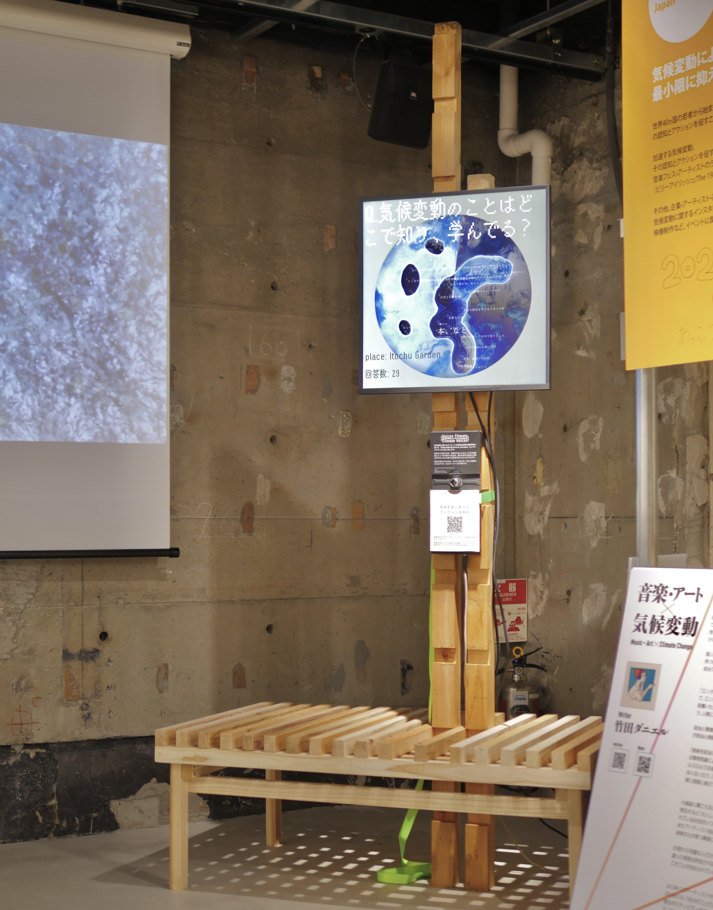
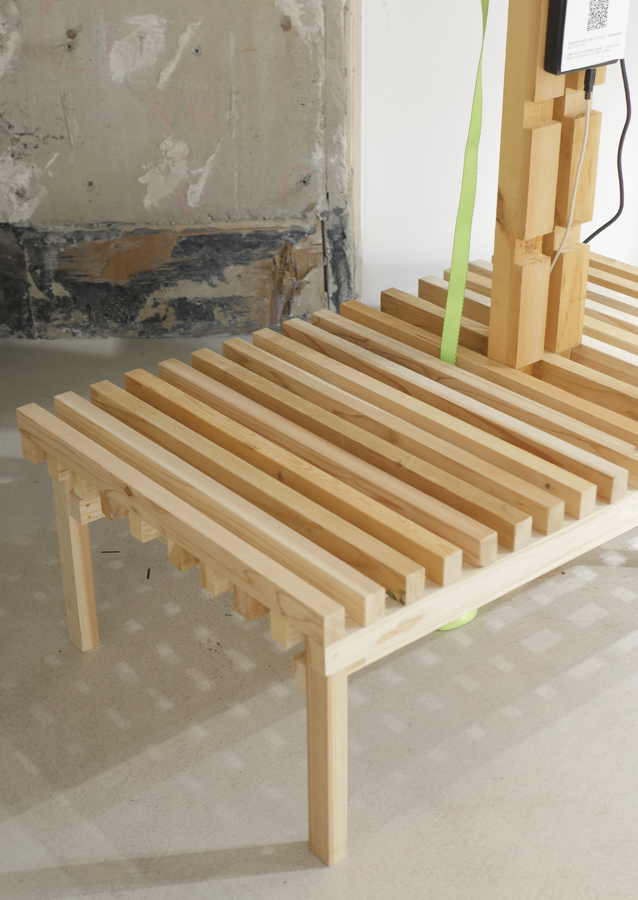
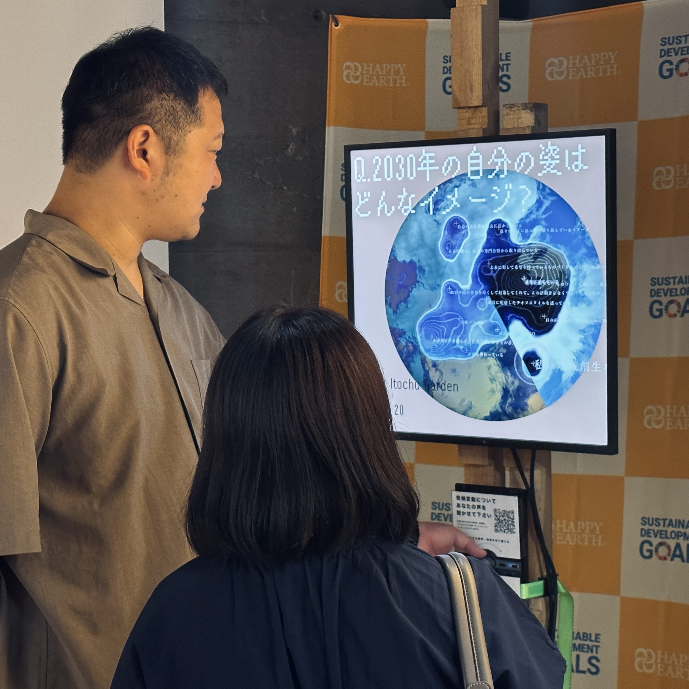
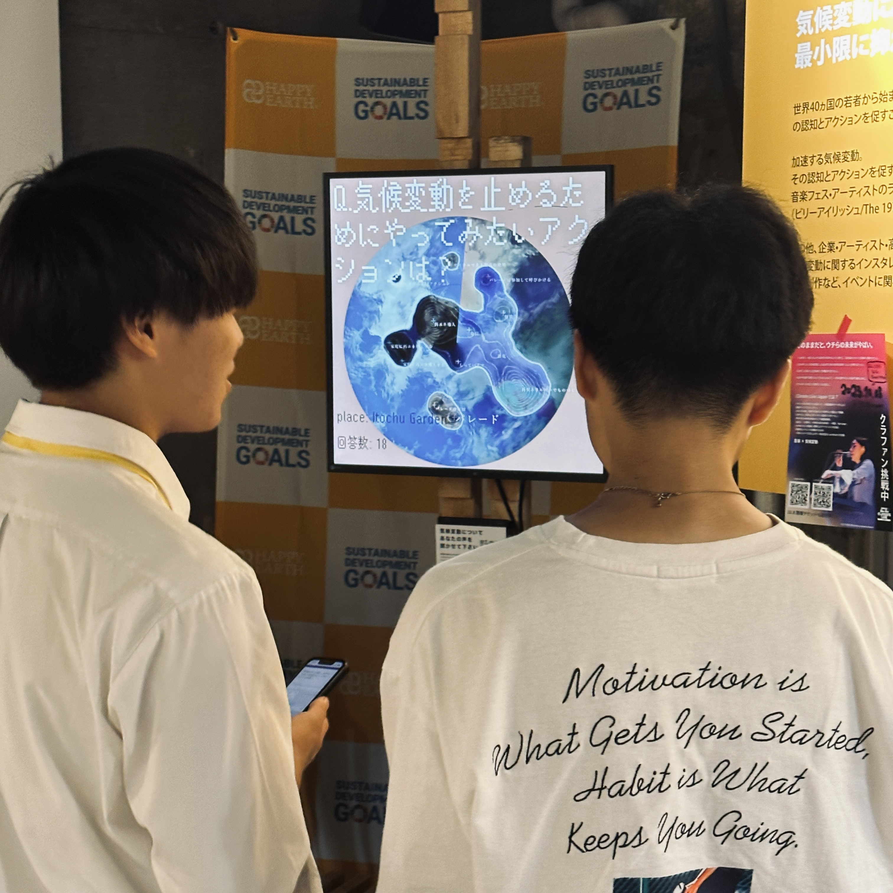

Climate Voices / Voices Climate

photo by yuma Shinozaki

structure made of scrap materials designed by yuma Shinozaki
人が絶えず行き交い、変化の激しいブース展示の条件下で、来場者に環境問題のトピックについて深く考えてもらう空間を作るには。
異なる時間に訪れた人々の意見を相互に共有し、議論を深めることができる仕組みとして、リアルタイムに分析・可視化が可能なアンケートシステムを提案した。
In the highly dynamic environment of a booth exhibition, where various people constantly come and go, how can visitors be encouraged to think deeply about environmental issues?
We have proposed a mechanism that allows visitors to engage in discussions with other attendees across different timeframes, fostering a continuous exchange of ideas and perspectives.
Questionnaire system that brings about realizations 🌏
このアンケートシステムでは、投稿された意見を文ベクトル化によって即座に分析し、他の来場者の回答との関係性を示す気候図のような表現として可視化される。
アンケートに回答することで、来場者はその場に生まれる「意見の気候」に影響を与えることができる。自らの考えを表現し、一人ひとりが行動することが、世界をよりよい方向へ導くと考えた。
In this survey system, we used sentence vectorization to instantly analyze submitted opinions and visualize them as a climate map-like representation, showing their relationship to answers from other visitors.
By responding to this survey, visitors have the power to influence the 'climate of opinions' in the place. We believe that expressing thoughts, sharing intentions, and each individual action can lead the world in a positive direction.
text analysis algorithm 🔀
テキストのベクトル化には、オフラインで実行可能なSentence Transformersを用いた。続いて、t-SNEアルゴリズムによりベクトルを2次元に削減し、点の密度に応じた等高線の表現を加えることで、「気候図」として可視化した。
To obtain a vector of texts, we utilized Sentence Transformers, which can be run locally. Subsequently, we reduced the dimensionality of the vectors to 2 dimensions using the t-SNE algorithm. Finally, we visualized the data as a 'climate map' with a contour effect based on the density of points.


collaborated with Maho Tashiro (CLIMATE LIVE JAPAN) / Yuma Shinozaki (Structure design / Direction)
made with TouchDesigner / python / Ableton Live
🖥️